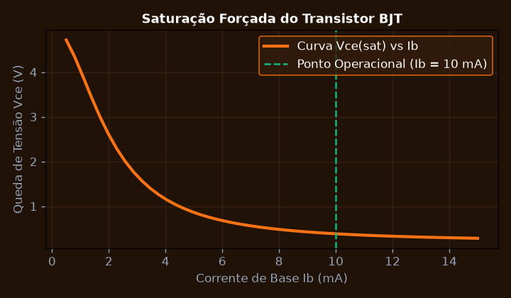
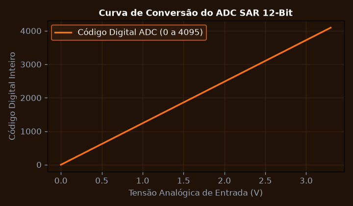
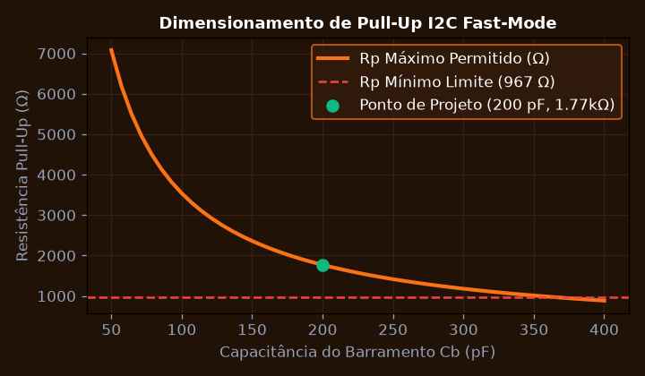
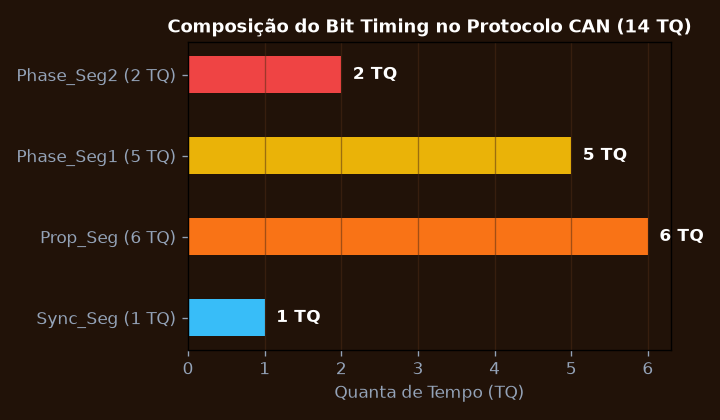
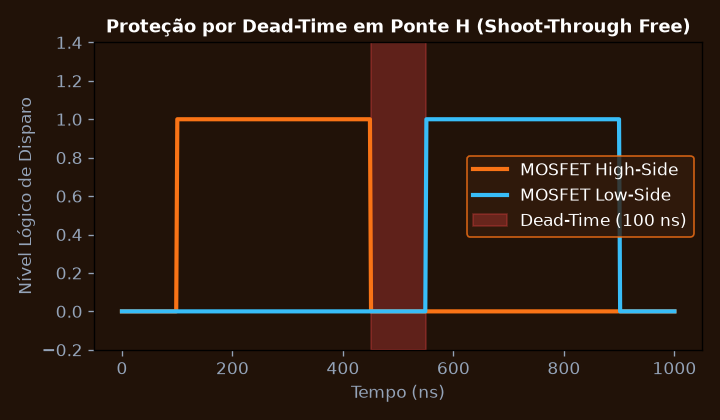
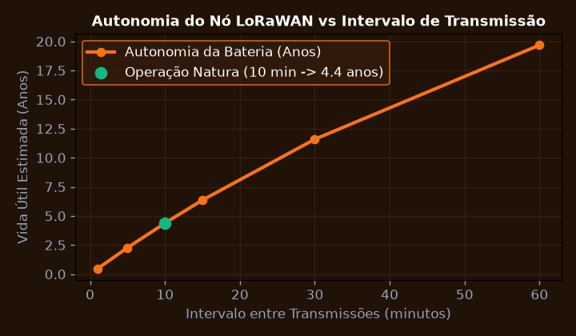

Saturação e Chaveamento Rápido com Transistores BJT e MOSFETs
Dimensionar os resistores de polarização de base e gate para assegurar saturação forçada com fator beta_forçado = 10 em relés e acionadores de potência indutivos.
💎 Resolução Algébrica Passo a Passo (Padrão Symbolab)
Para acionamento de relé de 12 V com resistência de bobina R_{bobina} = 120 \Omega: I_C = \frac{12}{120} = 100 \text{ mA}.
Adotando \beta_{forçado} = 10: I_B = \frac{100 \text{ mA}}{10} = 10 \text{ mA}.
R_B = \frac{3,3 - 0,7}{0,01} = \frac{2,6}{0,01} = 260 \Omega \implies \text{Adotado } 270 \Omega.
Inclusão obrigatória de diodo 1N4007 em antiparalelo com a bobina para absorver surtos de tensão indutiva V = -L \frac{di}{dt}.
Tempo de chaveamento t_{on} = 45 \text{ ns} e dissipação térmica inferior a 20 mW no BJT.

Condicionamento e Aquisição de Sinais com ADC SAR de 12 Bits
Calcular a resolução de tensão, o erro de quantização e dimensionar o estágio de proteção com diodos zener para um conversor ADC de 12 bits com tensão de referência V_ref = 3.3 V.
💎 Resolução Algébrica Passo a Passo (Padrão Symbolab)
Com N = 12 bits e 4096 níveis de quantização, 1 \text{ LSB} = \frac{3,3}{4095} \approx 805,86 \mu\text{V}.
E_q = \pm \frac{1}{2} LSB \approx \pm 402,9 \mu\text{V}.
SNR = 6,02(12) + 1,76 = 74,0 \text{ dB}.
Resistor limitador de 1 \text{ k}\Omega e diodo Schottky BAT54S limitando tensões de entrada estritamente entre -0,3 V e 3,6 V.
O sistema garante precisão de leitura de sensores de temperatura na floresta com resolução de 0,05 °C.

Barramentos Seriais de Alta Velocidade: Comparativo SPI vs I2C
Dimensionar os resistores de pull-up do barramento I2C em modo Fast-Mode (400 kHz) para compensar a capacitância parasita do cabo de telemetria C_bus = 200 pF.
💎 Resolução Algébrica Passo a Passo (Padrão Symbolab)
A especificação I2C Fast-Mode (400 kHz) estabelece tempo máximo de subida t_r \le 300 \text{ ns}.
R_{p(máx)} = \frac{300 \times 10^{-9}}{0,8473 \times 200 \times 10^{-12}} = \frac{300}{0,16946} \approx 1.770 \Omega.
Para garantir que a saída em nível baixo não drene mais que I_{OL} = 3 \text{ mA}: R_{p(mín)} = \frac{3,3 - 0,4}{0,003} \approx 967 \Omega.
Adotado R_p = 1,5 \text{ k}\Omega, satisfazendo a faixa [967 \Omega, 1770 \Omega].
Sinais SDA e SCL apresentam bordas limpas sem overshoot e taxa de erros de transmissão zero.

Redes Industriais e Automotivas: Protocolo CAN Bus 2.0B
Implementar a temporização de bit do controlador CAN (Bit Timing) para barramento a 500 kbps, configurando os segmentos Sync_Seg, Prop_Seg, Phase_Seg1 e Phase_Seg2.
💎 Resolução Algébrica Passo a Passo (Padrão Symbolab)
Para taxa de 500 kbps: t_{bit} = \frac{1}{500.000} = 2,0 \mu\text{s}.
Com clock de periférico f_{APB1} = 42 \text{ MHz} e prescaler BRP = 6: TQ = \frac{6}{42 \text{ MHz}} = 142,85 \text{ ns}.
Total de 14 TQ: Sync_Seg = 1 TQ; Prop_Seg = 6 TQ; Phase_Seg1 = 5 TQ; Phase_Seg2 = 2 TQ.
\text{Sample Point} = \frac{1 + 6 + 5}{14} = \frac{12}{14} \approx 85,7\%, em perfeita conformidade com as normas CiA.
Comunicação diferencial robusta com transceptores MCP2551 garantindo alcance de até 100 m na instalação industrial.

Controle de Atuadores via PWM em Ponte H com Proteção Dead-Time
Dimensionar o tempo morto (Dead-Time) entre os sinais de disparo dos transistores high-side e low-side da Ponte H para prevenir curto-circuito em condução cruzada (Shoot-Through).
💎 Resolução Algébrica Passo a Passo (Padrão Symbolab)
Tempo de desligamento máximo t_{off} = 180 \text{ ns}; tempo de subida mínimo t_{on} = 40 \text{ ns}.
O driver IR2104 introduz skew de propagação de \approx 50 \text{ ns}.
Adotar margem de proteção de 50 ns para variações de temperatura até 85 °C.
t_{dead} \ge 180 - 40 + 50 + 50 = 240 \text{ ns} \implies \text{Configurado timer com } 300 \text{ ns}.
Controle bidirecional suave de motor DC de 24 V sem aquecimento residual nos MOSFETs.

Sistema Embarcado Completo de Telemetria Florestal LoRaWAN
Integrar os módulos de sensoriamento, processador ARM Cortex-M e rádio transmissor LoRaWAN em regime de ultra baixo consumo (Deep Sleep) para autonomia de 5 anos em bateria.
💎 Resolução Algébrica Passo a Passo (Padrão Symbolab)
No ciclo de transmissão (1 segundo a cada 10 minutos): corrente ativa I_{ativo} = 35 \text{ mA}.
Durante o intervalo inativo de 599 segundos: corrente residual I_{sleep} = 4,2 \, \mu\text{A}.
I_{médio} = \frac{35 \text{ mA} \times 1\text{s} + 0,0042 \text{ mA} \times 599\text{s}}{600\text{s}} = \frac{35 + 2,516}{600} \approx 62,5 \, \mu\text{A}.
Com célula LiSOCl_2 de 3.6 V / 3000 mAh e desclassificação de 80\%: Vida = \frac{2400 \text{ mAh}}{0,0625 \text{ mA}} = 38.400 \text{ horas} \approx 4,38 \text{ anos}.
Sistema 100% autônomo e hermético operando na selva sem manutenção recarregável.
